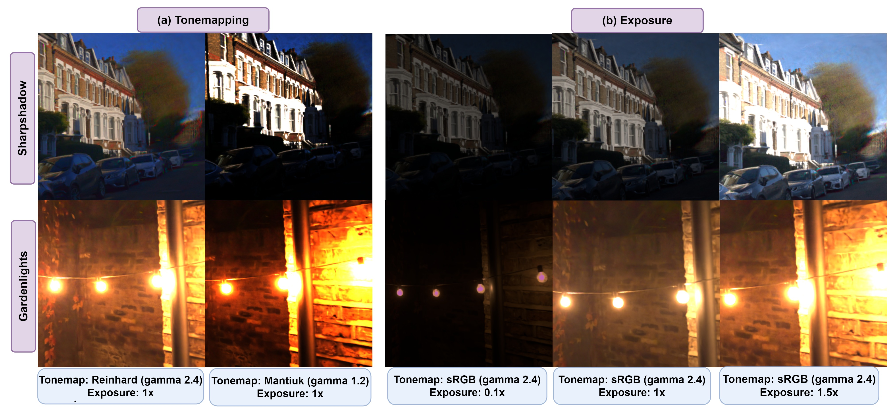

Depth from 3D
Using HDRSplat, you can get accurate depth, even at night!
The recent advent of 3D Gaussian Splatting (3DGS) has revolutionized the 3D scene reconstruction space enabling high-fidelity novel view synthesis in real-time. However, with the exception of RawNeRF, all prior 3DGS and NeRF-based methods rely on 8-bit tone-mapped Low Dynamic Range (LDR) images for scene reconstruction. Such methods struggle to achieve accurate reconstructions in scenes that require a higher dynamic range. Examples include scenes captured in nighttime or poorly lit indoor spaces having a low signal-to-noise ratio, as well as daylight scenes with shadow regions exhibiting extreme contrast. Our proposed method HDRSplat tailors 3DGS to train directly on 14-bit linear raw images in near darkness which preserves the scenes' full dynamic range and content. Our key contributions are two-fold: Firstly, we propose a linear HDR space-suited loss that effectively extracts scene information from noisy dark regions and nearly saturated bright regions simultaneously, while also handling view-dependent colors without increasing the degree of spherical harmonics. Secondly, through careful rasterization tuning, we implicitly overcome the heavy reliance and sensitivity of 3DGS on point cloud initialization. This is critical for accurate reconstruction in regions of low texture, high depth of field, and low illumination. HDRSplat is the fastest method to date that does 14-bit (HDR) 3D scene reconstruction in ≤15 minutes/scene (∼30x faster than prior state-of-the-art RawNeRF). It also boasts the fastest inference speed at ≥120fps. We further demonstrate the applicability of our HDR scene reconstruction by showcasing various applications like synthetic defocus, dense depth map extraction, and post-capture control of exposure, tone-mapping and view-point.
Using HDRSplat, you can get accurate depth, even at night!
As a byproduct of our raw-space optimization, we can also solve the tonemapping and exposure problem.
We can also animate the scene by interpolating the deformation latent codes of two input frames. Use the slider here to linearly interpolate between the left frame and the right frame.

Start Frame

End Frame
Using Nerfies, you can re-render a video from a novel viewpoint such as a stabilized camera by playing back the training deformations.
There's a lot of excellent work that was introduced around the same time as ours.
HDR-GS: Efficient High Dynamic Range Novel View Synthesis at 1000x Speed via Gaussian Splatting introduces HDR reconstructions similar to ours.
LE3D uses a color-MLP explicitly unlike ours to represent RAW color space.
@article{singh24_hdrsplat,
author = {Singh, Shreyas and Garg, Aryan and Mitra, Kaushik},
title = {HDRSplat: Gaussian Splatting for High Dynamic Range 3D Scene Reconstruction from Raw Images},
journal = {BMVC},
year = {2024},
}